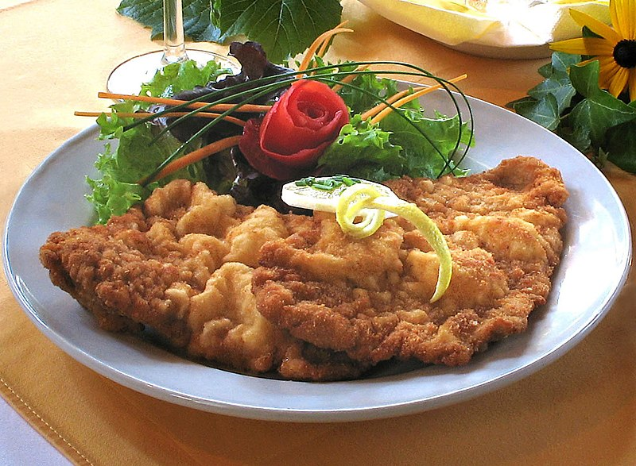

<ion-header [translucent]="true">
  <ion-toolbar color="primary">
    <ion-title>
      Recipes
    </ion-title>
  </ion-toolbar>
</ion-header>

<ion-content>
  <ion-list >
    <ion-item  routerLink= "/recipe-detail" Button>
      <ion-avatar slot="start">
        
      </ion-avatar>
      <ion-label>Schnitzel</ion-label>
    </ion-item>
    <ion-item routerLink= "/recipe-detail1" Button> 
      <ion-avatar slot="start">
        
      </ion-avatar>
      <ion-label>Spaghettis</ion-label>
    </ion-item>
  </ion-list>
</ion-content>
